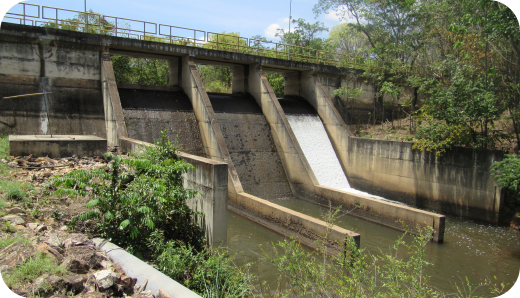

A Barragem do Rio Descoberto é uma barragem do tipo concreto, concluída em
1974, utilizada como reservatório para o abastecimento de água para grande parte do Distrito
Federal, A Barragem do Rio Descoberto está localizada a cerca de 50 km a oeste de Brasília, podendo
ser acessada através de rodovia asfaltada, pela BR-070. Ela corresponde a aproximadamente 60% de
todo o abastecimento da população local servindo a até 1.200.000 pessoas. Ela mede 3 metros de
largura da crista, 33 metros de altura máxima e 265 m de comprimento.
86 milhões de m³
Santa Maria
A Represa Santa Maria é uma barragem localizada no Parque Nacional de Brasília e
faz parte das bacias do Paraná, Paranaíba e Corumbá. A represa pertence ao Sistema Santa Maria, que
é responsável por 11% do abastecimento de água da população do Distrito Federal (DF). No ano de
1961, foi criado uma unidade de conservação com a finalidade de proteger as nascentes de água que
abastecem o Santa Maria, proporcionando assim uma água pura, exigindo poucos componentes químicos
para o tratamento.
84,33 milhões de m³
Torto
A Barragem do Torto localiza-se no Ribeirão do Torto, dentro do Parque Nacional
de Brasília, Distrito Federal. Ela foi fundada em 1959. Pode-se acessar a Barragem a partir da
rodovia BR-450, pode ser feito por estrada pavimentada com extensão em torno de 3,0 km. Desde este
ponto, percorrem-se mais 100 metros e chega-se à barragem do Torto que fica no limite da área do
Parque Nacional de Brasília.
243.000 m³
Pipiripau
A Barragem de Captação do ribeirão Pipiripau, de 1997, tem a função de
regularização de nível para captação de água. O barramento do ribeirão do Pipiripau é constituído de
uma barragem de concreto simples. Ela possui muros de gravidade, tomada d´água, desarenador,
descarga de fundo e vertedouro livre no corpo da barragem. Localiza-se no Ribeirão Pipiripau
distante 8,0 km a do centro da região administrativa de Planaltina, no Distrito Federal.
3.675 m³

Captações
Existem diversas captações de pequeno porte pertencentes à Companhia de
Saneamento Ambiental do Distrito Federal (Caesb), que juntas acumulam um volume total de 0,118
hectômetros cúbicos (hm³), como as do Catetinho, Capão da Onça, Cachoeirinha, entre outras. Muitas
dessas captações têm a finalidade de serem áreas de proteção de mananciais, onde qualquer tipo de
irregularidade pode e deve ser denunciado através do número 115.